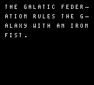
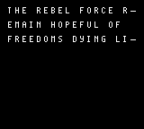

Story Screen
The story screen shows a basic story on 2 pages. Afterwards, it sends the player to the gameplay game state.
 Initiating up the Story Screen
In the InitStoryState we’ll just going to turn on the LCD. Most of the game state’s logic will occur in its update function.
Create a file named story-screen.asm. In that file add includes to hardware.inc and character-mapping.inc, and create a section in ROM0.
INCLUDE "src/main/includes/hardware.inc"
INCLUDE "src/main/includes/character-mapping.inc"
SECTION "StoryStateASM", ROM0
Like we did with the title screen, we’ll need to setup a function for the Story State’s initation logic. This function, called InitStoryState will be very similar to that of the title screen. The major difference is that nothing will be drawn in the InitStoryState function.
Add the following to your new story-screen.asm file.
InitStoryState::
call WaitForVBlankStart
; Turn the LCD off
ld a, 0
ld [rLCDC], a
call ClearBackground
call ResetShadowOAM
call hOAMDMA
; Turn the LCD on
ld a, LCDCF_ON | LCDCF_BGON
ld [rLCDC], a
ret;
Updating the Story Screen
Here’s the data for our story screen. We have this defined just above our UpdateStoryState function.
Copy this data into your story-screen.asm file.
Story:
.Line1 db "the galatic empire", 255
.Line2 db "rules the galaxy", 255
.Line3 db "with an iron", 255
.Line4 db "fist.", 255, 255
Story2:
.Line1 db "the rebel force", 255
.Line2 db "remain hopeful of", 255
.Line3 db "freedoms light", 255, 255
The story text is shown using a typewriter effect. This effect is done similarly to the “press a to play” text that was done before, but here we wait for 3 vertical blank phases between writing each letter, giving some additional delay.
**Note: The
WaitForAToBePressedis a utility function that comes with the starter. You can find more info on it in the utilties page. **
We’ll call the MultilineTypewriteTextInHL_AtDE function exactly how we called the DrawTextTilesLoop function.
Create a function called UpdateStoryState in story-state.asm. Export this function and tell it to call the MultilineTypewriteTextInHL_AtDE function. Pass $9821 t DE as the location to start writing/drawing. Pass Story.Line1 to HL as the text draw.
UpdateStoryState::
; Call Our function that typewrites text onto background/window tiles
ld de, $9821
ld hl, Story.Line1
call MultilineTypewriteTextInHL_AtDE
Our basic story has 2 pages. After the first page has drawn, we’ll wait until the A button is pressed. After such, we’ll start drawing the second page. In-between pages we need to clear the background, so no extra text tiles linger.
Add the following code immediately after your previous call to MultilineTypewriteTextInHL_AtDE with Story.Line1
call WaitForAToBePressed
call WaitForVBlankStart
; Turn the LCD off
ld a, 0
ld [rLCDC], a
call ClearBackground
; Turn the LCD on
ld a, LCDCF_ON | LCDCF_BGON
ld [rLCDC], a
After we’ve shown the first page and cleared the background, we’ll do the same thing for page 2:
Add this second implementation of the MultilineTypewriteTextInHL_AtDE function to draw the second page of our story:
; Call Our function that typewrites text onto background/window tiles
ld de, $9821
ld hl, Story2.Line1
call MultilineTypewriteTextInHL_AtDE
With our story full shown, once the player presses the A button, we’re ready to move onto the next game state: Gameplay. We’ll end our UpdateStoryState function by updating our game state variable and jump back to the NextGameState label like previously discussed.
Complete the story state and our UpdateStoryState function using the code below:
call WaitForAToBePressed
ld hl, InitGameplayState
ld a, l
ld [wNextGameState_Initiate+0], a
ld a, h
ld [wNextGameState_Initiate+1], a
ld hl, UpdateGameplayState
ld a, l
ld [wNextGameState_Update+0], a
ld a, h
ld [wNextGameState_Update+1], a
ret